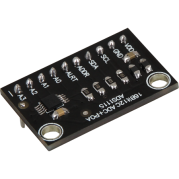
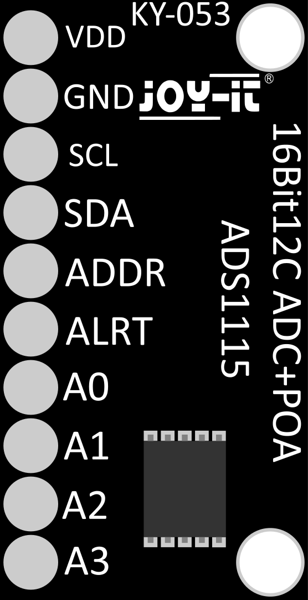
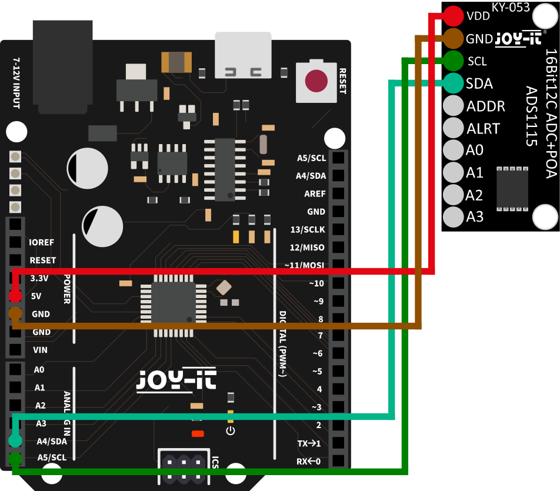

Türchen 23 · Mittwoch, 23. Dezember 2026
Feinste Messung vor dem Fest
Nur noch einmal schlafen! Heute wandelt ein ADC analoge Signale besonders fein in Zahlen um.
Heute im Säckchen
KY-053 Analog Digital Converter
Per entsprechenden Befehlen auf den I2C-Bus können auf bis zu 4 Eingängen analoge Spannungswerte mit bis zu 16-Bit Genauigkeit gemessen werden.

Der Analog-Digital-Wandler (ADC) ermöglicht es, analoge Spannungswerte auf bis zu 4 Eingängen mit hoher Präzision zu messen. Über den I2C-Bus können entsprechende Befehle gesendet werden, um diese Messungen durchzuführen. Die gemessenen Werte werden dann kodiert auf den I2C-Bus ausgegeben.
Mit einer Auflösung von bis zu 16 Bit können sehr genaue Messungen durchgeführt werden. Der ADC kann unterschiedliche Abtastraten programmieren, was ihn flexibel für verschiedene Anwendungen macht. Er arbeitet in einem Spannungsbereich von 2 V bis 5,5 V und kann Eingangsspannungen bis zur Betriebsspannung messen.
Die einfache Integration über die I2C-Schnittstelle und die Möglichkeit, mehrere ADC-Kanäle zu nutzen, machen diesen Wandler ideal für Projekte, die präzise Spannungsmessungen erfordern. Anwendungen könnten unter anderem in der Datenerfassung, Sensorüberwachung oder in verschiedenen Elektronikprojekten liegen, wo genaue analoge Messungen benötigt werden. Der geringe Betriebsstrom von typischerweise 150μA macht ihn auch für energieeffiziente Anwendungen geeignet.
| Technische Daten | |
|---|---|
| Schnittstelle | I2C |
| ADC-Kanäle | 4 |
| Auflösung pro Kanal | 16 Bit |
| Programmierbare Abtastrate | 8 bis 860 SPS |
| Betriebsspannung | 2 V bis 5,5 V |
| Analogeingangsspannung | 0 V bis Betriebsspannung |
| I2C Logikspannung | 0 V bis 5,5 V |
| I2C Adresse | 0x48 bis 0x4B |
| Typischer Betriebsstrom | 150μA |
Änderung der I2C Adresse
Dieser Analog zu Digital Wandler (oder in kurz ADC) besitzt nicht nur eine I2C Adresse. Hierbei handelt es sich um einen ADC welcher 4 verschiedene I2C Adressen besitzen kann. Diese können frei gewählt werden aber im weiteren verlauf wird die Standard Adresse 0x48 benutzt.
In der folgenden Tabelle kannst du alle möglichen Adressen einsehen und auch wie diese zu erreichen sind. Hierbei ist hauptsächlich zu beachten das der ADDR Pin des ADC verantwortlich ist für die Änderung der Adresse.
| Von | Zu | Adresse |
|---|---|---|
| ADDR Pin | GND Pin | 0x48 |
| ADDR Pin | VDD Pin | 0x49 |
| ADDR Pin | SDA Pin | 0x4A |
| ADDR Pin | SCL Pin | 0x4B |
Anschlussbelegung


| Arduino | Sensor |
|---|---|
| 5 V | +V |
| GND | GND |
| Pin A5 | SCL |
| Pin A4 | SDA |
| - | ADDR |
| - | ALRT |
| - | A0 |
| - | A1 |
| - | A2 |
| - | A3 |
Weihnachtsidee zum Bauteil
Weihnachtsidee: Der Schneehöhen-Messer
Einen Tag vor Heiligabend steigt die Spannung: Gibt es weiße Weihnachten? Mit einem Drehpotentiometer „lässt du es schneien“: Der ADS1115 misst die Spannung am Poti sehr fein, und der Sketch rechnet sie in eine Schneehöhe von 0 bis 50 cm um.
Verdrahtung
Den ADS1115 wie im Abschnitt zum Bauteil oben anschließen (SCL an A5, SDA an A4, +V an 5V, GND an GND). Zusätzlich ein Potentiometer (z. B. 10 kΩ):
| Potentiometer | Anschluss |
|---|---|
| äußerer Pin | 5V |
| äußerer Pin | GND |
| mittlerer Pin (Schleifer) | A0 am ADS1115 |
Ablauf
Einmal pro Sekunde liest der Sketch Kanal A0 und zeigt die Schneehöhe als Balken, in Zentimetern und als Spannung. Der Messbereich ist wie im Artikel auf ±6,144 V eingestellt, so dass die vollen 5 V des Potis hineinpassen.
Bibliothek
Wie im Artikel: Adafruit ADS1X15.
Deine Knobelaufgabe
Im Sketch fehlt der Inhalt der loop()-Funktion. Die Kommentare darin verraten dir, was passieren soll – programmiere es selbst! Die Auflösung findest du morgen ganz unten auf der Seite von Türchen 24.
// Türchen 23: Der Schneehöhen-Messer
// Verdrahtung siehe tag-23.md (ADS1115 wie im Artikel, Poti an Kanal A0)
// Bibliothek: Adafruit ADS1X15
#include <Adafruit_ADS1X15.h>
const char ART[] PROGMEM = R"ART(
50 -| * . *
40 -| . * .
30 -| * . *
20 -|##############
10 -|##############
0 -|##############
Tuerchen 23: Der Schneehoehen-Messer
)ART";
Adafruit_ADS1115 ads;
const float MAX_SPANNUNG = 5.0; // Poti zwischen 5 V und GND
const float MAX_SCHNEE_CM = 50.0;
void setup() {
Serial.begin(9600);
Serial.println((const __FlashStringHelper*)ART);
ads.setGain(GAIN_TWOTHIRDS); // Messbereich +/- 6,144 V, wie im Artikel
if (!ads.begin()) {
Serial.println("ADS1115 nicht gefunden");
}
}
void loop() {
// Die Spannung an Kanal 0 in eine Schneehöhe von 0 bis MAX_SCHNEE_CM umrechnen,
// als Balken zeigen und kommentieren.
}Das Grundlagen-Beispiel
KY-053 Analog Digital Converter
Code-Beispiel
Die Arduino-Boards verfügen bereits über einen integrierten 10 Bit-ADC mit 6 Kanälen. Werden weitere Kanäle, oder eine höhere Genauigkeit, benötigt, so kann der Arduino mit Hilfe des KY-053 Analog Digital Converter Moduls um 4 ADC Kanäle mit 16-Bit Genauigkeit erweitert werden.
Um das folgende Codebeispiel auf deinen Arduino zu laden, empfehlen wir die Verwendung der Arduino IDE. In der IDE kannst du den passenden Port und das richtige Board für dein Gerät auswählen.
Es werden für das Codebeispiel auch die folgenden Bibliotheken verwendet:
Adafruit ADS1X15 von Adafruit | veröffentlicht unter der BSD-Lizenz
Diese Bibliotheken kannst du bequem über den Bibliotheken-Manager der Arduino IDE hinzufügen. Kopiere anschließend den unten stehenden Code in deine IDE. Um den Code auf den Arduino hochzuladen, klicke einfach auf den Upload-Button.
#include <Adafruit_ADS1X15.h>
#include <math.h>
// ADS1115-Modul ist initialisiert - alle weiteren Operationen mit
// dem ADC können mit Hilfe des "ads"-Objekts ausgeführt werden.
Adafruit_ADS1115 ads;
void setup() {
// Initialisiere seriellen Monitor
Serial.begin(9600);
Serial.println("Werte der analogen Eingänge des ADS1115 (A0..A3) werden ausgelesen und ausgegeben");
Serial.println("ADC Bereich: +/- 6.144V (1 bit = 0.1875mV)");
// Dieses Modul verfügt über Signalverstärker an seinen Analogeingängen,
// deren Verstärkung in den unten stehenden Bereichen per Software konfiguriert werden kann.
// Dies ist erforderlich, wenn ein bestimmter Spannungsbereich als Messergebnis
// erwartet wird und somit eine höhere Auflösung des Signals erhält.
// ADS1115
// -------
ads.setGain(GAIN_TWOTHIRDS); // 2 / 3x gain +/- 6.144V 1 bit = 0.1875mV
// ads.setGain(GAIN_ONE); // 1x gain +/- 4.096V 1 bit = 0.125mV
// ads.setGain(GAIN_TWO); // 2x gain +/- 2.048V 1 bit = 0.0625mV
// ads.setGain(GAIN_FOUR); // 4x gain +/- 1.024V 1 bit = 0.03125mV
// ads.setGain(GAIN_EIGHT); // 8x gain +/- 0.512V 1 bit = 0.015625mV
// ads.setGain(GAIN_SIXTEEN); // 16x gain +/- 0.256V 1 bit = 0.0078125mV
ads.begin();
}
void loop() {
uint16_t adc0, adc1, adc2, adc3;
float voltage0, voltage1, voltage2, voltage3;
float gain_conversion_factor;
// Der Befehl "ads.readADC_SingleEnded (0)" ist der eigentliche Vorgang, der die Messung im ADC startet.
// Die "0" als Variable für diese Funktion definiert den verwendeten Kanal, der gemessen werden soll.
// Soll z.B. der dritte Kanal gemessen werden, muss die "0" durch die "3" ersetzt werden.
adc0 = ads.readADC_SingleEnded(0);
adc1 = ads.readADC_SingleEnded(1);
adc2 = ads.readADC_SingleEnded(2);
adc3 = ads.readADC_SingleEnded(3);
// Umrechnung der aufgezeichneten Werte in eine Spannung
voltage0 = ads.computeVolts(adc0);
voltage1 = ads.computeVolts(adc1);
voltage2 = ads.computeVolts(adc2);
voltage3 = ads.computeVolts(adc3);
// Ausgabe der Werte auf der seriellen Schnittstelle
Serial.print ("A0: "); Serial.print (voltage0); Serial.println (" V");
Serial.print ("A1: "); Serial.print (voltage1); Serial.println (" V");
Serial.print ("A2: "); Serial.print (voltage2); Serial.println (" V");
Serial.print ("A3: "); Serial.print (voltage3); Serial.println (" V");
Serial.println ("------------------------");
delay (1000);
}Lösung für Tag 22 anzeigen
// Auflösung zu Türchen 22: Der Wichtel-Dolmetscher
// Verdrahtung siehe tag-22.md (Arduino an Seite B mit 5 V, A1 zurück an Arduino-Pin A0)
const char ART[] PROGMEM = R"ART(
/\ /\
/ \ / \
(o o) 5 V (o o)
\__/ <------> \__/
/| |\ 3,3 V /| |\
Tuerchen 22: Der Wichtel-Dolmetscher
)ART";
const int SIGNAL_B1 = 3; // Arduino-Pin 3 an B1 (5-V-Seite)
const int MESS_A1 = A0; // A1 (3,3-V-Seite) zurück an den Arduino zum Nachmessen
const int PUNKT_MS = 200; // Länge eines Morse-Punkts
const char BOTSCHAFT[] = "FROHES FEST";
// Morsecode für A bis Z
const char* const MORSE[] = {
".-", "-...", "-.-.", "-..", ".", "..-.", "--.", "....", "..", ".---", "-.-", ".-..", "--",
"-.", "---", ".--.", "--.-", ".-.", "...", "-", "..-", "...-", ".--", "-..-", "-.--", "--.."
};
float hoechsteSpannung = 0;
void morseElement(int einheiten) {
digitalWrite(SIGNAL_B1, HIGH);
delay(PUNKT_MS / 2);
// Während das Signal anliegt: Was kommt auf der 3,3-V-Seite an?
float volt = analogRead(MESS_A1) * (5.0 / 1023.0);
hoechsteSpannung = max(hoechsteSpannung, volt);
delay(einheiten * PUNKT_MS - PUNKT_MS / 2);
digitalWrite(SIGNAL_B1, LOW);
delay(PUNKT_MS); // Pause innerhalb eines Buchstabens
}
void setup() {
pinMode(SIGNAL_B1, OUTPUT);
Serial.begin(9600);
Serial.println((const __FlashStringHelper*)ART);
Serial.println("Der Arduino spricht 5 V, auf Seite A wird nur 3,3 V verstanden. Der Wichtel übersetzt:");
}
void loop() {
hoechsteSpannung = 0;
for (int i = 0; BOTSCHAFT[i] != '\0'; i++) {
char c = BOTSCHAFT[i];
if (c == ' ') {
Serial.print(" ");
delay(4 * PUNKT_MS); // zusammen mit den Pausen davor 7 Einheiten zwischen Wörtern
continue;
}
const char* code = MORSE[c - 'A'];
Serial.print(c);
Serial.print('(');
Serial.print(code);
Serial.print(") ");
for (int j = 0; code[j] != '\0'; j++) {
morseElement(code[j] == '.' ? 1 : 3);
}
delay(2 * PUNKT_MS); // zusammen mit der Pause davor 3 Einheiten zwischen Buchstaben
}
Serial.println();
Serial.print("Gesendet mit 5 V, angekommen auf Seite A mit ");
Serial.print(hoechsteSpannung, 2);
Serial.println(" V.");
delay(3000);
}